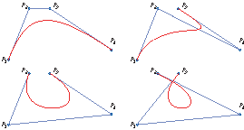
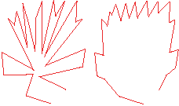

See the book at amazon.co.uk or amazon.com
Related Books

See Digital Multimedia at amazon.co.uk or amazon.com

See Web Design: A Complete Introduction at amazon.co.uk or amazon.com
The authors are not responsible for the content of any external sites linked to from digitalmediatools.org
All material on this site is ©2007–2010 MacAvon Media and may not be reproduced without permission.
Chapter 8 Exercise Files
The material offered for download in this section of the site is copyright. You may not publish any of this material in any form, reproduce it on public Web sites, or pass it off as your own. It is supplied for use in private and institutional study only.
Colour and Gradients
Download the photograph of a fish [PSD:1.0MB]
Open the image in Photoshop and select Save for Web and Devices… from the File menu. Choose GIF as the format, and experiment with changing the numbers of colours in the colour table. Observe the effect of the different options for the colour reduction algorithm (Perceptual, Selective, etc.). How does their performance vary as you change the number of colours?
Set the number of colours to 64 or fewer, and experiment with editing the colour table to ensure that the bright red colour in the stems of the plant on the right is retained in the GIF version. Note: If you do not have good red/green colour vision, please do not attempt this part of the exercise.
Download the gradient examples [Illustrator:99.3kB]
Download the sample gradients and open the file in Illustrator. Experiment with changing the colours and other parameters of the gradients used to fill the two ovals. Try adding extra intermediate gradient stops. Use the gradients as fills for other shapes.
Now practise creating similar gradients in Photoshop and Flash, and adjusting their parameters in those programs in the same way.
Bézier Curves and Anchor Points
 Download example curves [Zip:646.3kB]
Download the Zip archive, which contains four Bézier curves, each in its own Illustrator file. You will find the curves, direction lines and points on three separate layers. For each curve, hide the curve layer and add a new layer, and, using the lines on the other layers as guides, reproduce the curve using the pen tool. Make the original curve visible to check how accurately you have done this. Now hide the lines and points and the curve you just drew, and try to make a copy of the original curve with the pen tool, first by drawing over it, then at distance away from it. (Check the accuracy of this last attempt by selecting your curve and dragging it over the original.)
 Download the polyline drawing [Illustrator:237.1kB]
The curious design shown on the left of the two images here and in the file for downloading was produced by moving some of the points in the polyline shown on the right. (An illustration from Digital Multimedia.) Use the direct selection tool to drag the points back to their original positions and recreate the original picture.